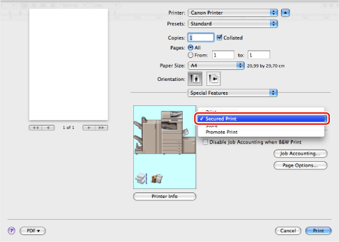
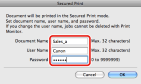

You can store a document with a certain user name and password in the printer. To print a stored document, enter the password via Remote UI or by using the control panel of the printer.
This feature is useful for printing confidential documents.
1.
From the [File] menu of the application software, select [Print].
The [Print] dialog box is displayed.
2.
The [Special Features] preferences pane is displayed.
3.
Select [Secured Print] from [Job Processing].

4.
Click [Print] in the [Print] dialog box.
5.
In the [Secured Print] dialog box, enter the document name, user name, and password.

6.
Click [OK] in the [Secured Print] dialog box.